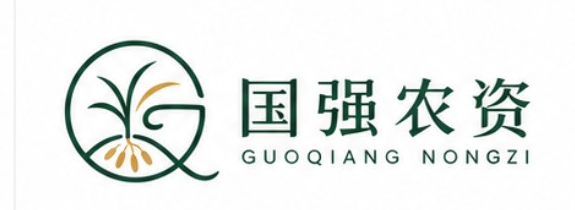
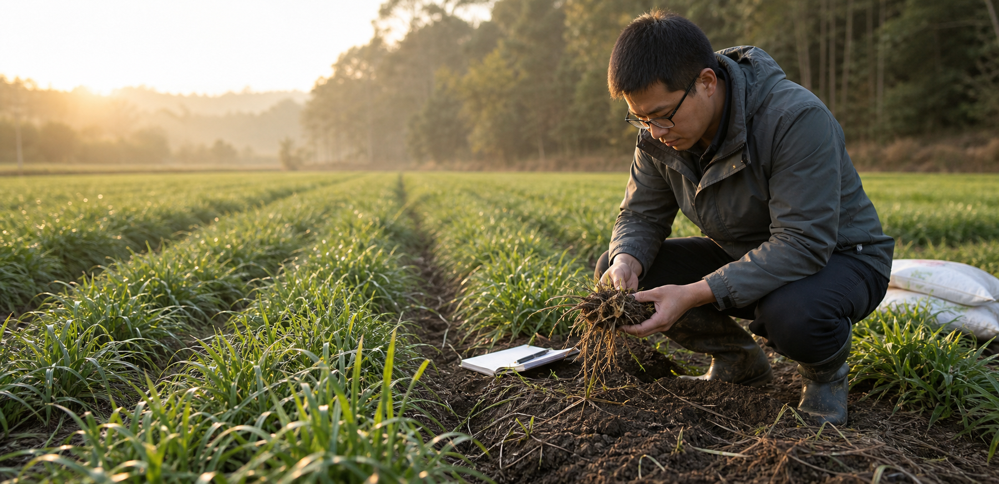
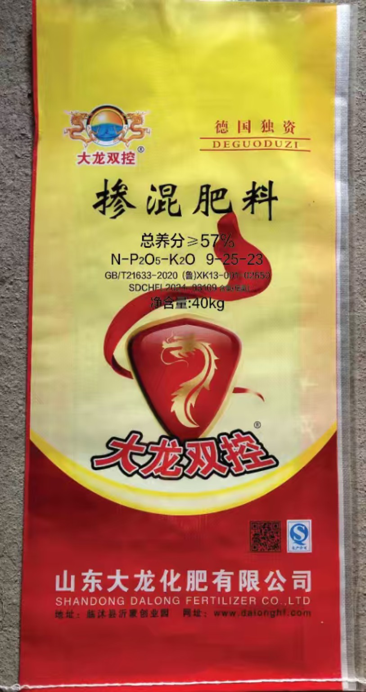
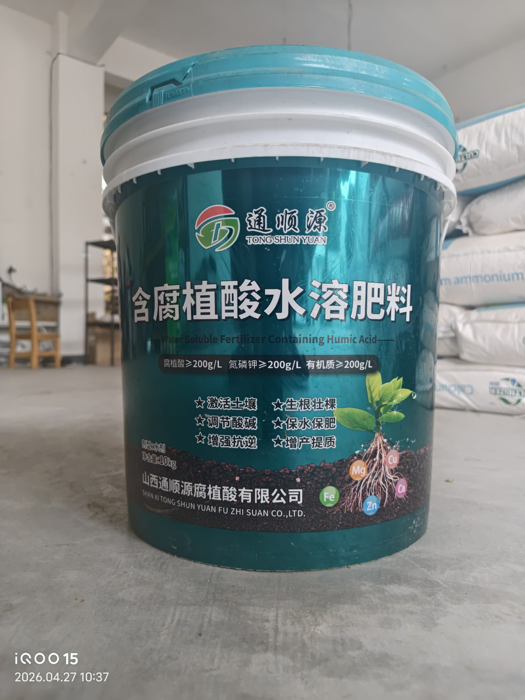
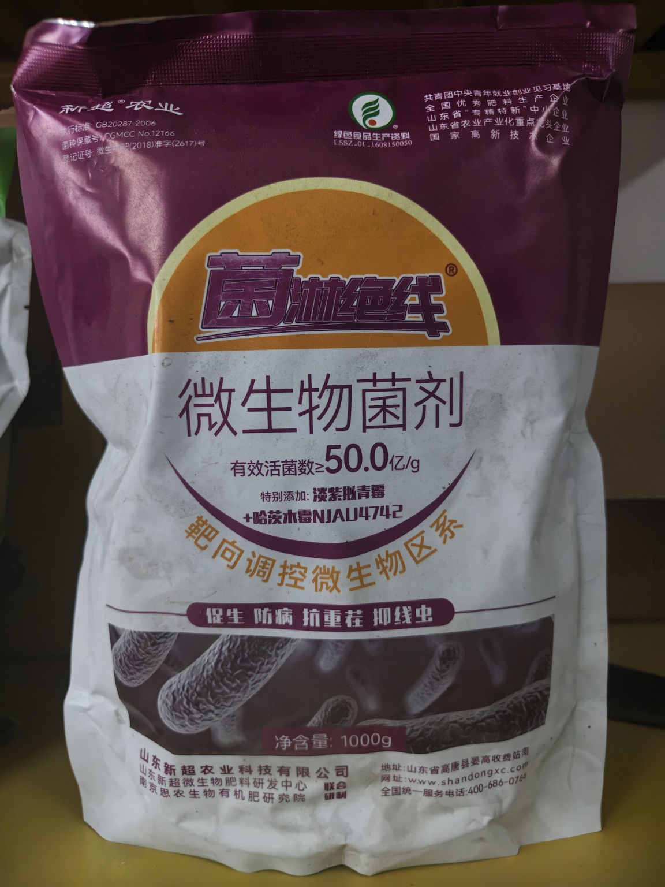
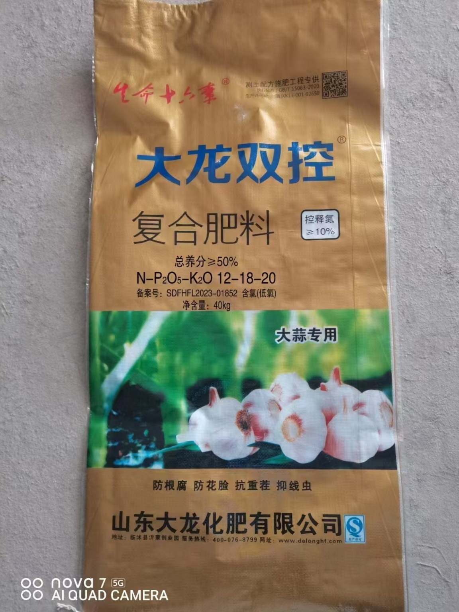

地上旺，地下少
排查氮磷钾比例、控旺历史、根系活力和块根形成阶段，避免只看苗色判断。

国强农资 麦冬田间技术服务
定位
国强农资由麦冬技术负责人张国强提供田间诊断和用肥用药建议，围绕控旺产品、腐植酸水溶肥、微生物菌剂、复合肥配方和地块回访，把有机麦冬、生态麦冬的基础管理做扎实。
常见问题
排查氮磷钾比例、控旺历史、根系活力和块根形成阶段，避免只看苗色判断。
结合根部照片、积水情况、土质和施肥记录，先判断方向，再给管理建议。
关注有机质不足、土壤板结、长期偏施化肥和根系弱的问题，逐步建立地块档案。
梳理多效唑、烯效唑及高残留农药使用历史，配合减药减残管理，降低新增残留风险。
服务方法
从苗情、根系、土质、历史用肥用药和当前投入目标出发，给出更稳妥的管理方向和产品搭配建议。
产品方案
大龙双控9-25-23和12-18-20分别对应高磷高钾营养调控、控释稳长管理，配合腐植酸水溶肥和微生物菌剂，服务有机麦冬、生态麦冬的养根护土、控叶促根和块根形成。
腐植酸水溶肥和微生物菌剂可以辅助降解农药残留，但只能叫“降解、缓解、减少风险”，不能保证一定完全去除历史农药残留。
豆粕蛋白和卢大哥两款都属于复合微生物肥料，不是控旺剂、杀菌剂或杀线虫剂。用在麦冬上，重点是改土、养根、补充基础营养、提升根际活力，为麦冬块根形成和后期膨大创造条件。

大龙双控9-25-23掺混肥料 低氮、高磷、高钾配方，氮9%、磷25%、钾23%，总养分≥57%。少给氮，减少叶片过旺刺激；重点补磷钾，偏向控叶促根、块根形成和后期膨大。 适合麦冬叶片偏旺、前期氮肥多、进入块根形成和膨大阶段的地块。不是激素控旺，而是通过营养比例调控，让麦冬少疯长叶、多往地下长；浓度高，不能盲目加量。
腐植酸水溶肥 配合麦冬根系管理、土壤调理和营养补充，提高根际活性，缓解板结、弱根和药害压力。 新根恢复更快，叶色更稳，土壤吸肥环境改善，对残留降解有辅助作用。
无残留整线虫 专门针对麦冬根结线虫的无残留解决方案，用淡紫拟青霉、哈茨木霉等有益菌在根际治理线虫。淡紫拟青霉偏向寄生线虫卵、压低幼虫危害，哈茨木霉偏向根际定殖、防病促根，适合线虫重、重茬重的麦冬地块。 用菌治线虫，不增加高残留化学药压力；持续使用后可减少线虫伤根，护根促根，缓解烂根弱根和重茬压力，让根系环境更稳。
 豆粕蛋白复合微生物肥料
25kg，标注有效活菌数≥2.0亿/g，N+P2O5+K2O=20.0%，有机质≥20.0%，30%大豆蛋白，菌种为枯草芽孢杆菌、地衣芽孢杆菌，登记作物为番茄。定位为“营养+有机质+微生物”三合一型肥料，用于养土、养根和补充基础营养。
土壤不易板结，保水保肥能力增强；有利于麦冬新根、白根发生，根系活力提升，叶色和长势更均匀，为后期块根形成提供持续营养基础。总养分较高，其他氮肥不能无限叠加，不能单独宣传成“麦冬控旺肥”。
豆粕蛋白复合微生物肥料
25kg，标注有效活菌数≥2.0亿/g，N+P2O5+K2O=20.0%，有机质≥20.0%，30%大豆蛋白，菌种为枯草芽孢杆菌、地衣芽孢杆菌，登记作物为番茄。定位为“营养+有机质+微生物”三合一型肥料，用于养土、养根和补充基础营养。
土壤不易板结，保水保肥能力增强；有利于麦冬新根、白根发生，根系活力提升，叶色和长势更均匀，为后期块根形成提供持续营养基础。总养分较高，其他氮肥不能无限叠加，不能单独宣传成“麦冬控旺肥”。

 卢大哥复合微生物肥料
40kg，标注有效活菌数≥2.0亿/g，N+P2O5+K2O=15.0%，有机质≥20.0%，菌种为枯草芽孢杆菌、地衣芽孢杆菌，登记作物为西瓜。定位为土壤调理型复合微生物肥料，重点改善根区环境、培肥地力、促进根系稳定生长。
有利于改善麦冬根层透气性和团粒结构，减少闷、湿、板结环境，提高肥料利用率，降低脱肥和早衰风险。配合磷钾营养和合理控氮，更适合作为底肥和长期土壤管理基础。
卢大哥复合微生物肥料
40kg，标注有效活菌数≥2.0亿/g，N+P2O5+K2O=15.0%，有机质≥20.0%，菌种为枯草芽孢杆菌、地衣芽孢杆菌，登记作物为西瓜。定位为土壤调理型复合微生物肥料，重点改善根区环境、培肥地力、促进根系稳定生长。
有利于改善麦冬根层透气性和团粒结构，减少闷、湿、板结环境，提高肥料利用率，降低脱肥和早衰风险。配合磷钾营养和合理控氮，更适合作为底肥和长期土壤管理基础。

大龙双控12-18-20控释复合肥料 控释稳长型复合肥，氮12%、磷18%、钾20%，总养分≥50%，控释氮≥10%。不是单纯靠低氮，而是让部分氮缓慢释放，降低一次性供肥高峰。 适用于玉米地开天花时追肥；用在麦冬一两年苗上，可促进分蘖发兜、心杆粗实，让麦冬往两边发、不往上徒长。内容栏目
用短视频拆解旺长、不结根、黄苗、烂根、线虫等高频问题。
拍真实地块、挖根看苗、连续记录变化，不伪造对比。
讲配方、执行标准、有效成分、适用边界和使用注意事项。
风险边界
国强农资可以围绕有机麦冬、生态麦冬做减药减残和土壤修复管理，但农业结果受地块历史、天气、土壤、苗情、病虫害和实际操作影响，最终检测结果以正规机构对应批次报告为准。
有效咨询
至少准备三项：种植面积、种植时间、地块位置、苗情照片、根部照片、历史用肥、历史用药、是否打过多效唑或烯效唑、当前最严重的问题、联系方式。
联系咨询
咨询有机麦冬、生态麦冬无残留控旺管理，或了解腐植酸水溶肥、微生物菌剂在麦冬上的使用效果，可先扫码添加微信，再发送地块照片和历史用药情况。
地址：三台县花园镇花园大道花园邮政局旁边
麦冬技术负责人：张国强